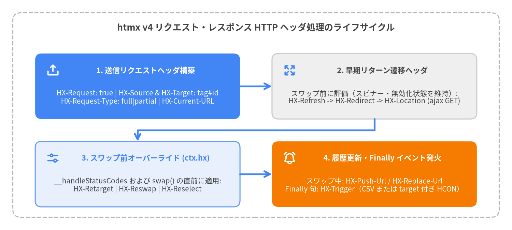

HTTP リクエスト・レスポンスヘッダ
htmx v4 は、HX-* HTTP リクエストヘッダを通じて豊富なクライアントコンテキストをサーバーへ伝達し、サーバーからは HX-* HTTP レスポンスヘッダを通じてクライアント側の画面遷移、DOM ターゲット変更、ブラウザ履歴更新、およびカスタムイベント発火を自在に制御できるようにします。htmx 2 と比較して、htmx v4 では HX-Request-Type（"full" または "partial"）が新設され、要素識別子が HX-Source と HX-Target の tag#id 形式に統一され（htmx 2 のリクエストヘッダ HX-Trigger と HX-Trigger-Name を廃止）、レスポンスイベント発火ヘッダが HX-Trigger に一本化されました（HX-Trigger-After-Swap と HX-Trigger-After-Settle を廃止）。
| ヘッダ名 | 方向 | 値の形式 | 処理フェーズ | 主な役割 |
|---|---|---|---|---|
HX-Request |
リクエスト | "true" |
__createCoreHeaders |
htmx が発行したすべての HTTP リクエストであることを示します（標準で Accept: text/html も付与）。 |
HX-Source |
リクエスト | tag または tag#id |
__createCoreHeaders |
リクエストを発火したトリガー要素を識別します（htmx 2 のリクエストヘッダ HX-Trigger の後継）。 |
HX-Target |
リクエスト | tag または tag#id |
__createRequestContext |
解決済みのスワップ先ターゲット要素を識別します（__buildIdentifier(ctx.target)）。 |
HX-Current-URL |
リクエスト | 完全 URL (location.href) |
__createCoreHeaders |
リクエスト開始時点でのブラウザの現在のドキュメント URL を通知します。 |
HX-Request-Type |
リクエスト | "full" | "partial" |
__issueRequest（fetch 直前） |
ctx.target === document.body または ctx.select 指定時は "full"、それ以外は "partial"（htmx 4 で新設）。 |
HX-Boosted |
リクエスト | "true" |
__createCoreHeaders |
hx-boost によって拡張されたリンクやフォームからのリクエストである場合に付与されます。 |
HX-History-Restore-Request |
リクエスト | "true" |
__restoreHistory |
戻る・進むナビゲーション時の履歴復元リクエストである場合に付与されます。 |
HX-Trigger |
レスポンス | CSV イベント名 / HCON / JSON | __issueRequest (finally) |
リクエスト完了後に sourceElement または指定した detail.target 上でカスタム DOM イベントを発火します。 |
HX-Push-Url |
レスポンス | "true" | "false" | URL パス |
__resolveHistoryAction |
hx-push-url を上書きし、スワップ時に history.pushState で URL をブラウザ履歴へ追加します。 |
HX-Replace-Url |
レスポンス | "true" | "false" | URL パス |
__resolveHistoryAction |
hx-replace-url を上書きし、スワップ時に history.replaceState で現在の履歴 URL を置換します。 |
HX-Redirect |
レスポンス | URL 文字列 | __handleHeadersAndMaybeReturnEarly |
スワップを中止し、ブラウザのページ全体遷移（location.href = url）を実行します。 |
HX-Location |
レスポンス | URL パス / HCON / JSON | __handleHeadersAndMaybeReturnEarly |
現在のスワップを中止し、htmx.ajax() によるクライアントサイド AJAX GET 遷移を実行します。 |
HX-Refresh |
レスポンス | "true" |
__handleHeadersAndMaybeReturnEarly |
スワップを中止し、location.reload() でページ全体を再読み込みします。 |
HX-Retarget |
レスポンス | CSS / 拡張セレクタ | __issueRequest（スワップ前） |
hx-status:XXX 評価および DOM スワップの前に ctx.target を上書きします。 |
HX-Reswap |
レスポンス | スワップ指定文字列 | __issueRequest（スワップ前） |
hx-status:XXX 評価および DOM スワップの前に ctx.swap を上書きします。 |
HX-Reselect |
レスポンス | CSS セレクタ | __issueRequest（スワップ前） |
hx-status:XXX 評価および DOM スワップの前に ctx.select を上書きします。 |

Source Code
from drawlib.canvas import save, setup
from drawlib.icons import phosphor
from drawlib.lines import line, lines
from drawlib.shapes import rectangle
from drawlib.styles import Styles
from drawlib.text import text
setup(width=160, height=72, dpi=150)
# Outer container frame
rectangle((80, 36), width=152, height=64, style=Styles.MutedDashed.patch(shape_r=2.5))
text(
(80, 63.5),
"htmx v4 リクエスト・レスポンス HTTP ヘッダ処理のライフサイクル",
style=Styles.DarkBold.patch(text_size=12.5),
)
x_left = 43.0
x_right = 117.0
y_top = 45.0
y_bot = 17.5
card_w = 64.0
card_h = 20.5
# 1. Outbound Request Headers (Top-Left, Focal Point 1)
rectangle((x_left, y_top), width=card_w, height=card_h, style=Styles.PrimaryFlat.patch(shape_r=2.0))
phosphor.upload_simple((x_left - 26.5, y_top + 5.0), width=4.4, style=Styles.WhiteBold)
text((x_left + 2.5, y_top + 5.0), "1. 送信リクエストヘッダ構築", style=Styles.WhiteBold.patch(text_size=10.5))
text(
(x_left, y_top - 3.5),
"HX-Request: true | HX-Source & HX-Target: tag#id\nHX-Request-Type: full|partial | HX-Current-URL",
style=Styles.White.patch(text_size=10.0),
)
# 2. Early-Exit Navigation Headers (Top-Right, Neutral)
rectangle((x_right, y_top), width=card_w, height=card_h, style=Styles.Neutral.patch(shape_r=2.0))
phosphor.arrows_out((x_right - 26.5, y_top + 5.0), width=4.4, style=Styles.PrimaryBold)
text((x_right + 2.5, y_top + 5.0), "2. 早期リターン遷移ヘッダ", style=Styles.DarkBold.patch(text_size=10.5))
text(
(x_right, y_top - 3.5),
"スワップ前に評価（スピナー・無効化状態を維持）:\nHX-Refresh -> HX-Redirect -> HX-Location (ajax GET)",
style=Styles.Dark.patch(text_size=10.0),
)
# 3. Pre-Swap Overrides (Bottom-Left, PrimaryNeutral)
rectangle((x_left, y_bot), width=card_w, height=card_h, style=Styles.PrimaryNeutral.patch(shape_r=2.0))
phosphor.sliders_horizontal((x_left - 26.5, y_bot + 5.0), width=4.4, style=Styles.PrimaryBold)
text((x_left + 2.5, y_bot + 5.0), "3. スワップ前オーバーライド (ctx.hx)", style=Styles.PrimaryBold.patch(text_size=10.5))
text(
(x_left, y_bot - 3.5),
"__handleStatusCodes および swap() の直前に適用:\nHX-Retarget | HX-Reswap | HX-Reselect",
style=Styles.Dark.patch(text_size=10.0),
)
# 4. Swap History & Finally Triggers (Bottom-Right, Focal Point 2)
rectangle((x_right, y_bot), width=card_w, height=card_h, style=Styles.AccentFlat.patch(shape_r=2.0))
phosphor.bell_ringing((x_right - 26.5, y_bot + 5.0), width=4.4, style=Styles.WhiteBold)
text((x_right + 2.5, y_bot + 5.0), "4. 履歴更新・Finally イベント発火", style=Styles.WhiteBold.patch(text_size=10.5))
text(
(x_right, y_bot - 3.5),
"スワップ中: HX-Push-Url / HX-Replace-Url\nFinally 句: HX-Trigger（CSV または target 付き HCON）",
style=Styles.White.patch(text_size=10.0),
)
# Flow connectors
line((x_left + 32.0, y_top), (x_right - 32.0, y_top), arrow_head="->", style=Styles.PrimaryBold)
lines([(x_right, y_top - 10.25), (x_right, 31.25), (x_left, 31.25), (x_left, y_bot + 10.25)], arrow_head="->", style=Styles.PrimaryBold)
line((x_left + 32.0, y_bot), (x_right - 32.0, y_bot), arrow_head="->", style=Styles.PrimaryBold)
save()
リクエストヘッダ#
HX-Request#
htmx が開始したすべての HTTP リクエストに付与され、常に文字列 "true" を持ちます。サーバーサイドのフレームワークは HX-Request を検査することで、ブラウザの直接ページ遷移と htmx の AJAX リクエストを判別できます（なお、__createCoreHeaders では同時に Accept: text/html も設定されます）。
構文・シグネチャ
HX-Request: true
Accept: text/html
ヘッダ仕様
| 項目 | src/htmx.js における値・動作 |
|---|---|
| ヘッダ名 | HX-Request |
| 値 | 常に "true" |
| 設定タイミング | hx-headers 評価および htmx:config:request 発火前の __createCoreHeaders(sourceElement)。 |
HX-Request-Type との併用 |
HX-Request と HX-Request-Type（"full" または "partial"）を組み合わせることで、完全な HTML レイアウトを返すか部分フラグメントのみを返すかを正確に分岐できます。 |
実践的な使用例
# Python (FastAPI / Starlette) でのサーバー側判定例
@app.get("/contacts")
def list_contacts(request: Request):
is_htmx = request.headers.get("HX-Request") == "true"
req_type = request.headers.get("HX-Request-Type") # "full" または "partial"
if is_htmx and req_type == "partial":
return templates.TemplateResponse("contacts/_table.html", {"request": request})
return templates.TemplateResponse("contacts/index.html", {"request": request})
HX-Source#
リクエストを発火させたトリガー DOM 要素（ctx.sourceElement）を識別するヘッダで、__buildIdentifier(elt) によって小文字の tag または tag#id（id は encodeURI(elt.id) 済み）の形式でフォーマットされます。htmx 2 のリクエストヘッダ HX-Trigger および HX-Trigger-Name を統合・置き換えるものです。
構文・シグネチャ
# <button id="save-btn" hx-post="/save"> から発火した場合
HX-Source: button#save-btn
# id 属性を持たない <form hx-post="/save"> から発火した場合
HX-Source: form
識別子フォーマット規則 (__buildIdentifier)
| トリガー要素のマークアップ | 送信される HX-Source 値 |
備考 |
|---|---|---|
<button id="submit-order" hx-post="/order"> |
button#submit-order |
小文字のタグ名 + # + URI エンコードされた id。 |
<input type="search" name="q" hx-get="/q"> |
input |
elt.id が空の場合は小文字のタグ名のみが送信されます（name 属性は含まれません）。 |
htmx.ajax('GET', '/data')（source 未指定） |
body（または body#<id>） |
sourceElt のデフォルトが document.body になります。 |
実践的な使用例
<!-- 同一エンドポイントを共有する2つのボタンをサーバー側で HX-Source により判別 -->
<form hx-post="/articles/42">
<input type="text" name="title" value="htmx v4 Guide">
<button id="btn-draft" type="submit" hx-post="/articles/42">Save Draft</button>
<button id="btn-publish" type="submit" hx-post="/articles/42">Publish Now</button>
</form>
HX-Target#
レスポンスがスワップされる解決済みのターゲット DOM 要素（ctx.target）を識別するヘッダで、__buildIdentifier(ctx.target) により小文字の tag または tag#id 形式で送信されます。
構文・シグネチャ
# hx-target="#search-results" が <div id="search-results"> に一致した場合
HX-Target: div#search-results
# hx-boost="true" によりターゲットが document.body になった場合
HX-Target: body
ターゲット解決とフォーマット規則
| ターゲット設定 | 送信される HX-Target 値 |
内部メカニクス (__createRequestContext) |
|---|---|---|
明示的な hx-target="#results" |
div#results（<div id="results"> の場合） |
ctx.target = this.__resolveTarget(sourceElement, ctx.target) の解決後に設定されます。 |
デフォルト（hx-target / hx-boost なし） |
HX-Source と同じ値（tag または tag#id） |
ctx.target がデフォルトで sourceElement 自身になるためです。 |
Boost された要素（hx-boost="true"） |
body（または body#<id>） |
Boost 要素のデフォルトターゲットは document.body です。 |
セレクタ不一致（ctx.target == null） |
(ヘッダ送信なし) | if (ctx.target) が真の場合のみヘッダが追加されます。 |
実践的な使用例
<!-- サーバー側で HX-Target を検査し、バッジ用とドロワー用で異なる HTML フラグメントを返却 -->
<button hx-get="/notifications" hx-target="#BadgeCounter">Refresh Count</button>
<button hx-get="/notifications" hx-target="#DrawerList">Open Drawer</button>
HX-Current-URL#
リクエストコンテキストが生成された時点でのブラウザの現在の完全 URL（window.location.href）を保持します。サーバー側でのアクセス解析、相対リダイレクト先の決定、または現在ページに応じたナビゲーション状態のレンダリングに利用できます。
構文・シグネチャ
HX-Current-URL: https://app.example.com/projects/12/settings?tab=security#keys
ヘッダ仕様
| 項目 | src/htmx.js における値・動作 |
|---|---|
| ヘッダ名 | HX-Current-URL |
| 値 | location.href（オリジン、パス名、クエリ文字列、およびハッシュフラグメントを含む完全 URL）。 |
| 設定タイミング | __createCoreHeaders(sourceElement)。 |
実践的な使用例
POST /Language/Switch HTTP/1.1
HX-Request: true
HX-Current-URL: https://app.example.com/docs/getting-started
HX-Source: button#lang-ja
HTTP/1.1 200 OK
HX-Redirect: https://app.example.com/ja/docs/getting-started
HX-Request-Type#
htmx v4 で新設されたヘッダです。 htmx がページ全体の HTML ドキュメントを必要としているか（"full"）、部分的な HTML フラグメントのみを必要としているか（"partial"）を示します。__issueRequest() 内で htmx:before:request を発火する直前に以下の式で決定されます。
ctx.request.headers["HX-Request-Type"] = (ctx.target === document.body || ctx.select) ? "full" : "partial";
構文・シグネチャ
# 特定要素への部分スワップ（hx-target="#list" かつ hx-select なし）
HX-Request-Type: partial
# hx-boost によるページ遷移、または hx-select="#content" を指定したリクエスト
HX-Request-Type: full
判定条件マトリクス
条件 (__issueRequest) |
HX-Request-Type の値 |
サーバー側の推奨レンダリング方式 |
|---|---|---|
ctx.target === document.body（例: hx-boost="true" または hx-target="body"） |
"full" |
完全な HTML ページ（または完全な <body> レイアウト）を返却してください。htmx が document.body をスワップし <title> を更新します。 |
Boolean(ctx.select) が真（例: hx-select="#main"） |
"full" |
完全な HTML ページを返却してください。クライアント側の ctx.select が完全なレスポンスから #main を抽出することを前提としています。 |
上記以外の ctx.target（かつ ctx.select なし） |
"partial" |
外側のレイアウト（<html>, <head>, ナビゲーションバー等）を省き、ctx.target 用の部分テンプレートのみを返却してください。 |
実践的な使用例
<!-- HX-Request-Type: partial を送信 -> サーバーは追加の <tr> 行のみを返却 -->
<button hx-get="/invoices?page=2" hx-target="#invoice-rows" hx-swap="beforeend">
Load More
</button>
<!-- HX-Request-Type: full を送信 -> サーバーは完全なページを返し、htmx が #invoice-table を抽出 -->
<a href="/invoices?status=paid"
hx-get="/invoices?status=paid"
hx-select="#invoice-table"
hx-target="#invoice-table"
hx-push-url="true">
Paid Invoices
</a>
HX-Boosted#
hx-boost によって拡張された <a> または <form> 要素からリクエストが発火した場合に、値 "true" で送信されます。
構文・シグネチャ
HX-Request: true
HX-Boosted: true
HX-Request-Type: full
HX-Target: body
ヘッダ仕様
| 項目 | src/htmx.js における値・動作 |
|---|---|
| ヘッダ名 | HX-Boosted |
| 値 | this.__isBoosted(elt) が真のとき "true"（それ以外はヘッダ自体が省略されます）。 |
HX-Request-Type との関係 |
Boost された要素で hx-target を別要素へ変更しない限り、ctx.target は document.body となるため、同時に HX-Request-Type: full も送信されます。 |
実践的な使用例
<nav hx-boost:inherited="true">
<!-- クリック時に HX-Boosted: true と HX-Request-Type: full を送信 -->
<a href="/analytics">Analytics</a>
</nav>
HX-History-Restore-Request#
ブラウザの戻る・進むナビゲーション時に、htmx が __restoreHistory() 内で DOM 状態を復元するために自動発行する GET リクエストにおいて、値 "true" で送信されます。
構文・シグネチャ
GET /projects/12 HTTP/1.1
HX-Request: true
HX-History-Restore-Request: true
HX-Request-Type: full
ヘッダ仕様
| 項目 | src/htmx.js における値・動作 |
|---|---|
| ヘッダ名 | HX-History-Restore-Request |
| 値 | "true"（__restoreHistory の AJAX 取得時のみ付与）。 |
| クライアント側のスワップ設定 | this.ajax('GET', path, { target: historyElt, swap: 'outerSync', select: historyElt !== document.body ? '[hx-history-elt],[data-hx-history-elt]' : undefined }) として発行されます。 |
実践的な使用例
# 履歴復元リクエスト時には確実に完全ページ（または [hx-history-elt] を含むレイアウト）を返却
if request.headers.get("HX-History-Restore-Request") == "true":
return render_full_page(request)
レスポンスヘッダ#
HX-Trigger#
レスポンスの処理とスワップが完了した後の __issueRequest() の finally ブロック内で、1つ以上のクライアントサイド DOM イベントを発火させます。htmx v4 では HX-Trigger-After-Swap と HX-Trigger-After-Settle は廃止され、HX-Trigger に一本化されました。
構文・シグネチャ
# 1. カンマ区切りのイベント名（ctx.sourceElement 上で空の detail {} を伴い発火）
HX-Trigger: itemSaved, refreshMetrics
# 2. イベントの detail ペイロードを持つ HCON または JSON オブジェクト
HX-Trigger: {"showToast": {"message": "Saved!", "level": "success"}}
# 3. detail.target による発火先 DOM 要素の直接指定
HX-Trigger: {"reloadTable": {"target": "#orders-table", "page": 1}}
解析およびイベント発火ルール (__handleTriggerHeader)
| ヘッダ値の形式 | 発火先ターゲット要素 | htmx.trigger() に渡される detail |
|---|---|---|
プレーン / CSV 文字列 ("evtA, evtB") |
ctx.sourceElement（DOM から切断済みの場合は document） |
各イベント名に対して空オブジェクト {}。イベントは document.body / document までバブリングします。 |
プリミティブ値を持つオブジェクト ('{"countUpdated": 42}') |
ctx.sourceElement |
{ value: 42 }（非オブジェクト値は { value: detail } にラップされます）。 |
詳細オブジェクト ('{"toast": {"msg": "OK"}}') |
ctx.sourceElement |
{ msg: "OK" }。 |
detail.target 付きオブジェクト ('{"refresh": {"target": "#grid"}}') |
htmx.find(detail.target) |
this.find(detail.target)（拡張セレクタ対応）で要素を検索し、その要素上で直接イベントを発火します。 |
実践的な使用例
<!-- サーバーからの HX-Trigger イベントを body 経由でリッスンしてテーブルを再取得 -->
<table id="contacts-table"
hx-get="/contacts/rows"
hx-trigger="contactsChanged from:body">
...
</table>
<div hx-on="show-toast from:body -> showNotification(event.detail.message)">
</div>
HX-Push-Url#
トリガー要素の hx-push-url や hx-replace-url 属性を上書きし、htmx.swap() 実行中にブラウザのセッション履歴スタックへ URL を追加します（history.pushState({htmx: true}, '', path)）。
構文・シグネチャ
# 最終的なリクエスト/レスポンス URL をブラウザ履歴へ push
HX-Push-Url: true
# 特定の正規 URL パスを履歴へ push
HX-Push-Url: /invoices/2026-0042
# URL の push を抑止（例: Boost されたフォームでバリデーションエラーを返す場合）
HX-Push-Url: false
値の解決仕様 (__resolveHistoryAction)
| ヘッダ値 | 動作 |
|---|---|
"true" |
response.raw.url || ctx.request.action から算出した url.pathname + url.search + (#anchor) を履歴へ push します。 |
カスタム URL / パス ("/items/9") |
指定された文字列をそのまま history.pushState({htmx: true}, '', path) に渡します。 |
"false" |
履歴への push を抑止します（hx-push-url や hx-boost のデフォルト push を打ち消します）。 |
実践的な使用例
POST /articles HTTP/1.1
HX-Request: true
HTTP/1.1 201 Created
HX-Push-Url: /articles/htmx-v4-deep-dive
Content-Type: text/html
<article id="main-article">...</article>
HX-Replace-Url#
要素の hx-replace-url や hx-push-url 属性を上書きし、htmx.swap() 実行中に現在のブラウザ履歴エントリを置換します（history.replaceState({htmx: true}, '', path)）。
構文・シグネチャ
# 現在の URL をリクエスト/レスポンス URL で置換
HX-Replace-Url: true
# 現在の URL を特定のステップやフィルタ URL で置換
HX-Replace-Url: /checkout?step=shipping
# 履歴の置換を無効化
HX-Replace-Url: false
値の解決仕様 (__resolveHistoryAction)
| ヘッダ値 | 動作 |
|---|---|
"true" |
response.raw.url || ctx.request.action から算出した url.pathname + url.search + (#anchor) で現在のエントリを置換します。 |
| カスタム URL / パス | 指定されたパスで history.replaceState({htmx: true}, '', path) を実行します。 |
"false" |
履歴の置換を抑止します（なお、レスポンスに HX-Push-Url がなく HX-Replace-Url のみが存在する場合、push 側もクリアされます）。 |
実践的な使用例
POST /search/save-preset HTTP/1.1
HX-Request: true
HTTP/1.1 200 OK
HX-Replace-Url: /search?preset=saved_77
Content-Type: text/html
<div id="preset-banner">Preset saved!</div>
HX-Redirect#
htmx:after:request（およびステータス >= 400 の場合は htmx:response:error）の発火直後に DOM スワップをスキップし、指定された URL へのブラウザ全体のページ遷移（window.location.href = ctx.hx.redirect）を即座に実行します。
構文・シグネチャ
HTTP/1.1 200 OK
HX-Redirect: /login?expired=1
実行メカニクス (__handleHeadersAndMaybeReturnEarly)
| 項目 | src/htmx.js における動作 |
|---|---|
| 評価順序 | __handleHeadersAndMaybeReturnEarly(ctx) 内で HX-Refresh の次（HX-Location の前）に評価されます。 |
| スワップのスキップ | true を返し、__issueRequest() で ctx.keepIndicators = true を設定して htmx.swap(ctx) の前に終了します。 |
| インジケータの維持 | ctx.keepIndicators = true により、ブラウザが新しいページへ遷移し終えるまで hx-indicator のスピナーや hx-disable の無効化状態が維持されます。 |
実践的な使用例
POST /session/logout HTTP/1.1
HX-Request: true
HTTP/1.1 200 OK
HX-Redirect: /welcome
HX-Location#
現在のレスポンスのスワップをスキップし、htmx.ajax('GET', path, opts) を呼び出すことで、ページ全体のリロードを伴わないクライアントサイド AJAX リダイレクトを実行します。単一の URL パス文字列、または HCON / JSON 設定オブジェクトを指定できます。
構文・シグネチャ
# 1. シンプルな URL パス（デフォルトで URL を履歴へ push し、document.body へスワップ）
HX-Location: /dashboard
# 2. HCON 設定文字列
HX-Location: path:/dashboard/metrics, target:#metrics-panel, swap:outerMorph, push:false
# 3. JSON 設定オブジェクト
HX-Location: {"path": "/users/42", "target": "#main", "select": "#profile", "swap": "innerHTML"}
対応する HCON / JSON オプション (__handleHeadersAndMaybeReturnEarly)
| オプションキー | 型・デフォルト | htmx.ajax('GET', path, opts) に渡される動作 |
|---|---|---|
path |
string（オブジェクト形式では必須） |
後続の GET リクエスト先 URL（ajax 呼び出し前に delete opts.path されます）。 |
target |
CSS / 拡張セレクタ（デフォルト: document.body） |
後続の GET レスポンスをスワップするターゲット要素。 |
swap |
スワップ指定文字列（デフォルト: htmx.config.defaultSwap） |
後続リクエストのスワップ方式（innerHTML, outerMorph 等）。 |
select |
CSS セレクタ | 後続レスポンスから特定要素を抽出するセレクタ。 |
selectOOB |
OOB セレクタ指定 | 後続レスポンスの Out-of-Band 抽出指定。 |
push / replace |
boolean | string（デフォルト: push = 'true'） |
opts.push と opts.replace が両方省略された場合、デフォルトで opts.push = 'true' が設定されます。 |
values / headers |
オブジェクト | 後続の GET リクエストに追加するパラメータまたはヘッダ。 |
source |
CSS セレクタ | 後続リクエストのソース要素。 |
| インジケータの引き継ぎ | opts.indicators = ctx.indicators |
現在のリクエストの ctx.indicators と ctx.disabledElements 配列が後続の htmx.ajax() リクエストへ引き継がれ（ctx.keepIndicators = true）、遷移完了までスピナーとボタン無効化が途切れず維持されます。 |
実践的な使用例
POST /projects HTTP/1.1
HX-Request: true
HTTP/1.1 201 Created
HX-Location: {"path": "/projects/99", "target": "#app-main", "select": "#app-main", "swap": "outerMorph"}
HX-Refresh#
"true" が指定された場合、DOM スワップを中止し、window.location.reload() によって現在のページ全体のブラウザリロードを強制します。
構文・シグネチャ
HTTP/1.1 200 OK
HX-Refresh: true
実行メカニクス (__handleHeadersAndMaybeReturnEarly)
| 項目 | src/htmx.js における動作 |
|---|---|
| 厳密な値判定 | ctx.hx.refresh === 'true' と完全一致する場合のみ実行されます。 |
| 最優先評価 | __handleHeadersAndMaybeReturnEarly(ctx) 内で HX-Redirect や HX-Location よりも先に評価されます。 |
| インジケータの維持 | ctx.keepIndicators = true を設定するため、ブラウザのリロードが完了するまでローディング表示が維持されます。 |
実践的な使用例
POST /settings/theme HTTP/1.1
HX-Request: true
HTTP/1.1 200 OK
HX-Refresh: true
HX-Retarget#
ステータスコードルーティング（__handleStatusCodes）および DOM スワップ（htmx.swap）が実行される前に、ctx.target を新しい CSS セレクタまたは拡張セレクタ（#errors, closest .row, this, body）で上書きします。
構文・シグネチャ
HTTP/1.1 422 Unprocessable Entity
HX-Retarget: #validation-banner
HX-Reswap: innerHTML
評価順序と hx-status:XXX との相互作用
__issueRequest 内のステップ |
内部コード (src/htmx.js) |
動作上の注意点 |
|---|---|---|
1. HX-Retarget の適用 |
if (ctx.hx.retarget) ctx.target = ctx.hx.retarget; |
ctx.target をヘッダのセレクタ文字列で置き換えます。 |
2. hx-status:XXX の適用 |
this.__handleStatusCodes(ctx); |
HX-Retarget の後に実行されます。要素に一致する hx-status:XXX="target:..." がある場合、クライアント側の hx-status の target が優先されます。 |
| 3. スワップ時の要素解決 | this.__resolveTarget(ctx.sourceElement || document.body, swapSpec.target || ctx.target) |
ctx.sourceElement を基準としてセレクタを解決します（closest form や find .errors などの拡張セレクタも使用可能）。 |
実践的な使用例
POST /comments HTTP/1.1
HX-Request: true
HX-Target: div#comment-list
HTTP/1.1 400 Bad Request
HX-Retarget: #comment-form-errors
HX-Reswap: innerHTML
Content-Type: text/html
<p class="error">Comment body cannot contain external links.</p>
HX-Reswap#
ステータスコードルーティングおよび DOM スワップの前に、ctx.swap を新しいスワップ方式およびモディファイア（innerHTML, outerMorph, none, beforeend scroll:bottom 等）で上書きします。
構文・シグネチャ
HTTP/1.1 200 OK
HX-Reswap: outerMorph transition:true
実行メカニクス
| 項目 | src/htmx.js における動作 |
|---|---|
| 代入タイミング | if (ctx.hx.reswap) ctx.swap = ctx.hx.reswap;（__handleStatusCodes(ctx) と this.swap(ctx) の直前に実行）。 |
| モディファイア対応 | __parseSwapSpec(ctx.swap) で解析されるため、hx-swap のすべてのスワップ方式およびモディファイア（swap:, settle:, transition:, scroll:, show:, ignoreTitle:, strip:, focusScroll:, swapEmpty:, target:）を指定できます。 |
| メインスワップの抑止 | HX-Reswap: none を返すと、レスポンス内の <hx-partial>、hx-swap-oob、および HX-Trigger ヘッダのみを処理してメインターゲットのスワップをスキップできます。 |
実践的な使用例
POST /cart/items HTTP/1.1
HX-Request: true
HTTP/1.1 200 OK
HX-Reswap: none
HX-Trigger: {"cartUpdated": {"count": 4}}
Content-Type: text/html
<hx-partial hx-target="#cart-badge" hx-swap="innerHTML">4</hx-partial>
HX-Reselect#
ターゲットへ挿入する前にレスポンス HTML フラグメントからどの要素を抽出するかを指定する ctx.select（hx-select）を、サーバー指定の CSS セレクタで上書きします。
構文・シグネチャ
HTTP/1.1 200 OK
HX-Reselect: #updated-card-content
実行メカニクス
| 項目 | src/htmx.js における動作 |
|---|---|
| 代入タイミング | if (ctx.hx.reselect) ctx.select = ctx.hx.reselect;（__handleStatusCodes(ctx) と this.swap(ctx) の前に適用）。 |
__processMainSwap での抽出 |
let selected = fragment.querySelectorAll(ctx.select); を実行し、一致したすべてのノードを含む新しい DocumentFragment で fragment を置き換えます。 |
実践的な使用例
GET /reports/full-view HTTP/1.1
HX-Request: true
HX-Target: div#summary-widget
HTTP/1.1 200 OK
HX-Reselect: #kpi-summary-cards
Content-Type: text/html
<div id="full-report">
<div id="kpi-summary-cards">...</div>
<table id="detailed-ledger">...</table>
</div>